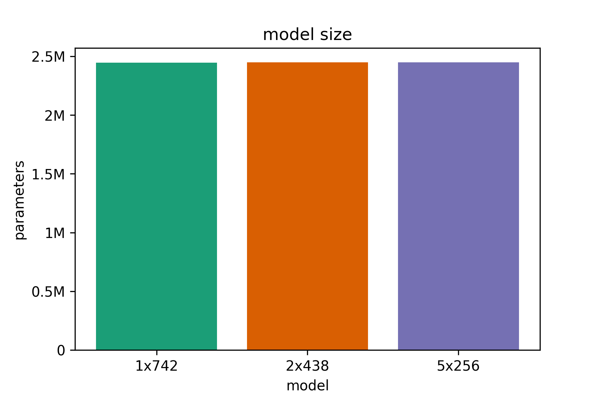
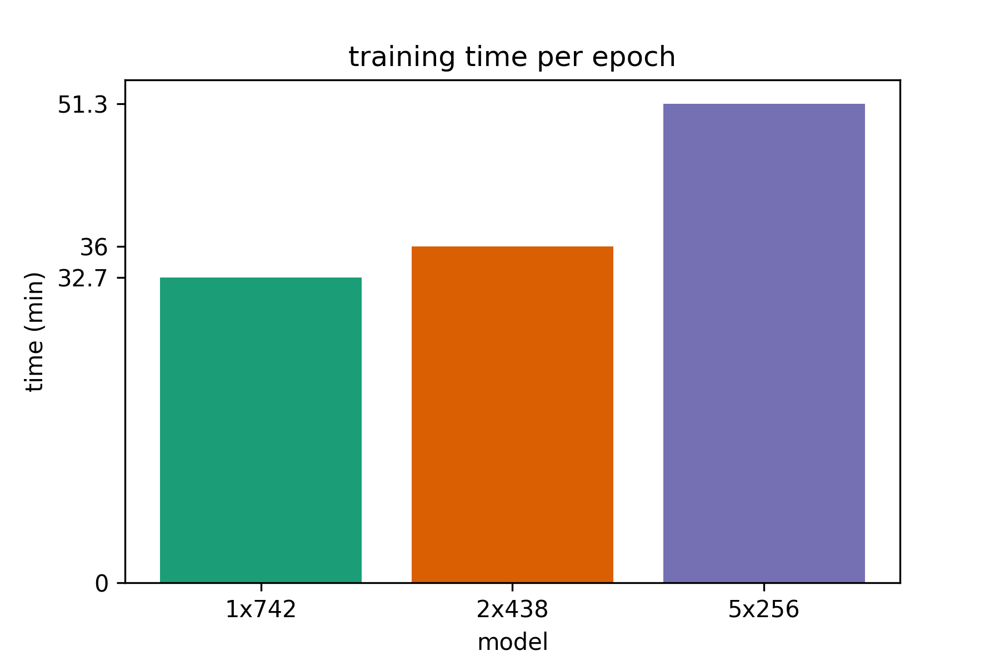
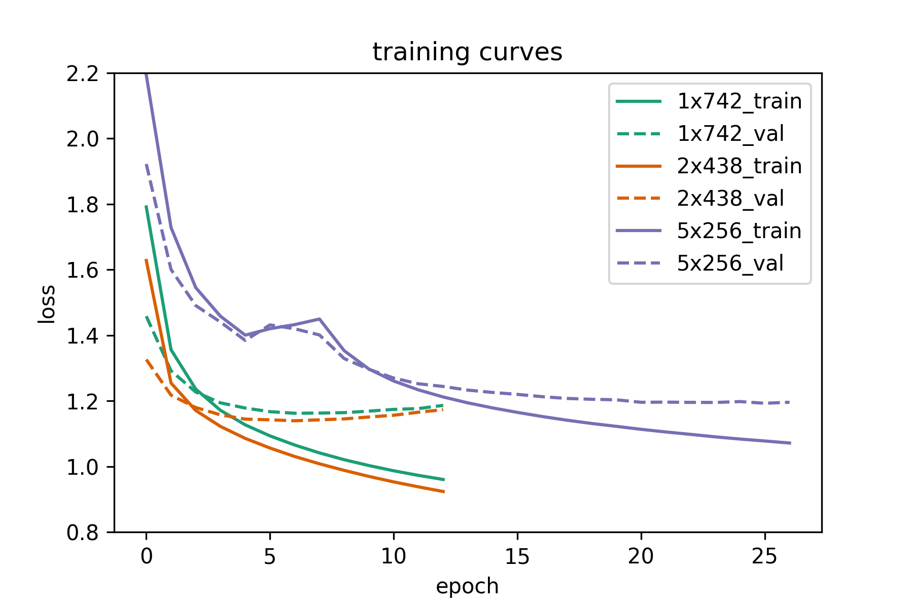
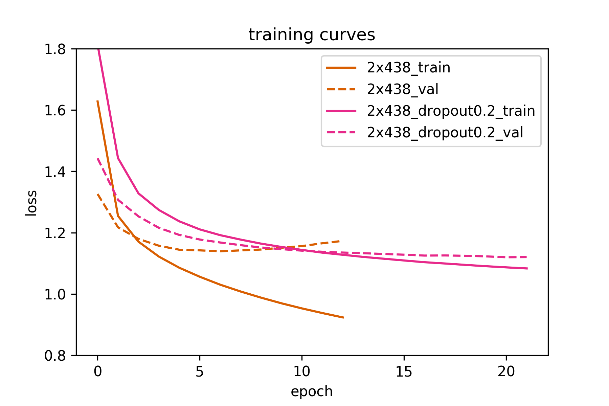

Let's assume we like books by a certain author. Let's also assume that this
certain author is not publishing books anymore because he/she is in (permanent)
retirement. No need to despair! With the help of A.I. we can train a neural
network to write text in the same style as our favorite author, assuming that
enough training data is available.
Character to character Recurrent Neural Networks (RNNs) are a nice model
to study properties of RNNs on a fun problem. They are not the best models
out there for sequence to sequence prediction, but they are easy and fun
to use. So they are perfect for a hobby project. In this specific project
we will use a character to character Long Short Term Memory (LSTM) network
to predict the next character in a sequence of characters. After training,
the very same model can be used to generate arbitrary text in the same
style of the author of the text(s) we used for training.
So we can use a fun problem to study the properties of LSTMs. To be precise,
given a certain parameter budget of e.g. 3 Million parameters, what's the
best way to spend them? Should we only use a single layer wide LSTM, use
a deep stack of narrow LSTMs (few hidden units per layer in the stack) or
is the optimal solution somewhere in between. So to rephrase te problem: given
a parameter budget, is there a sweet spot between width and depth of the
network, where we get the best return of investment of our parameter budget?
Let's find out.
We will use the Sherlock Holmes books by Sir Arthur Conan Doyle. One reason
to choose Sherlock Holmes is because the books are interesting, another reason
is that there are many books availabe (8 of them) which means there's enough
training data to get generated text of reasonable quality. It's not going to
be perfect, but it will be fun. One final reason is that all Sherlock Holmes books
are available for free on Project Gutenberg
The following books were used:
the header and footer of each book was removed prior to training and
all books were concatenated in a single .txt file of approximately 2.8 MB.
We will predict each character in the training data based it's 30 preceding characters.
So the model accepts sequences of length 30 as input and predicts a single output each time.
We will use keras to define our networks. We will split our training data into
90% training set and 10% validation set. Our training set is approximately 2.5 MB, so
the parameter budget for the network is approximately 2.5 M parameters maximum.
We will test out three different network architectures, all of them having approximately
2.4 M parameters. Starting from a single-layer LSTM (model A), we will move on to
a thinner 2-layer deep LSTM (model B) and finally also test an even thinner
and deeper 5-layer LSTM (model C). Since we use 2.4 M parameters, less than our parameter budget,
we will not use dropout. If overfitting appers to be a proble, we will add dropout later.
The models in detail (as defined in keras) are:
model A: 1-layer deep LSTM, 742 hidden units per layer
dropout=0.0
model = Sequential()
model.add(LSTM(742, input_shape=(maxlen, len(chars)), dropout=dropout))
model.add(Dense(len(chars)))
model.add(Activation('softmax'))
optimizer = 'adam'
model.compile(loss='categorical_crossentropy', optimizer=optimizer)model B: 2-layer deep LSTM, 438 hidden units per layer
dropout=0.0
model = Sequential()
model.add(LSTM(438, input_shape=(maxlen, len(chars)), return_sequences=True, dropout=dropout))
model.add(LSTM(438, dropout=dropout))
model.add(Dense(len(chars)))
model.add(Activation('softmax'))
optimizer = 'adam'
model.compile(loss='categorical_crossentropy', optimizer=optimizer)model C: 5-layer deep LSTM, 256 hidden units per layer
dropout=0.0
model = Sequential()
model.add(LSTM(256, input_shape=(maxlen, len(chars)), return_sequences=True, dropout=dropout))
model.add(LSTM(256, return_sequences=True, dropout=dropout))
model.add(LSTM(256, return_sequences=True, dropout=dropout))
model.add(LSTM(256, return_sequences=True, dropout=dropout))
model.add(LSTM(256, dropout=dropout))
model.add(Dense(len(chars)))
model.add(Activation('softmax'))
optimizer = 'adam'
model.compile(loss='categorical_crossentropy', optimizer=optimizer)We will use keras to define our networks. We will split our training data into
We will train all models using a batch size of 512, until the validation loss converges
or starts overfitting. For each of the models (A, B or C) we will save the model version
(model weights) that achieve the best results in terms of validation loss.
All models have approximately the same number of 2.44 M parameters. This is important
since we only want to investigate the effect of added depth on model performance, if we
simply stack layers of the same size on each other, a model with more layers will have
more parameters and will not be directly comparably to a deeper or shallower model.

We can see that deeper models take longer to train, probably since the optimizer is having
a hard time. Recent advances in feed-forward networks such as batch normalization and residual connections
have not yet been established in mainsteam LSTM architectures, but there are promising results. Links to
some interesting papers in this direction are included in the end of the post (Recurrent batch normalization
and Residual LSTM).

So deeper networks need more time per epoch. But how many epochs are needed until convergence?
As we can see from the following plot the 1 and 2-layer LSTMs converge very fast and start overfitting
before 10 epochs. On the other hand, the 5-layer LSTM needs 2 to 3 times as many epochs for the validation
loss to start converging.

So, are deeper recurrent networks worth it? Yes, if they are not too deep. As we can see above, the 1-layer LSTM is worse than the
2-layer network in terms of performance (although it trains fast). The 2-layer LSTM is the best network in terms of performance
(validation loss) and is very close to the 1-layer network in terms of overall training time (time per epoch and number of epochs
until convergence). The 5-layer network is not as useful. It is much harder and slower to train than the 2-layer network and is the worst
of all networks in terms of performance.
As we discussed above, Recurrent Batch Normalization and Residual LSTM (links at the end of the article) seem promising approaches
to training deep recurrent networks, but we're not there yet. However, in this specific problem we saw that even our best 2-layer LSTM
starts overfitting quite early. So let's train it again, this time using a small value of dropout=0.2 and see if the validation loss improves.
Using dropout minimally increases training time per epoch, but needs 2 or 3 times the number of epochs to reach a minimum value for the validation loss.
In this case, the training time per epoch increased by 2.5 min from 36 to 38.5 min per epoch, but converged much later as seen in the training curve.
The original 2-layer LSTM achieves 1.139 validation loss (7th epoch), while the 2-layer LSTM with dropout=0.2 achieves 1.12 validation loss (20th epoch).
So we did manage to improve results a little bit. Another thing we could try is increasing the sequence length used for prediction. We currently predict
the 31st character based on the 30 preceding characters. We could possibly get more interesting results if we predict e.g. the 101st character based
on the 100 preceding characters, but such an approach would be more time & memory intensive.

Here we show the best validation loss achieved by all models (lower is better). We see that the 2-layer LSTM with dropout 0.2 outperforms all
other models, while the 5-layer LSTM performs the worst. So deeper models can be better than shallow, 1-layer LSTMs. However, recurrent models that are too deep
are more difficult to train (at least for the moment).
Here we showcase some text generated by the best model (2-layer LSTM, dropout = 0.2). The random seed used as input to the model before text
generaton begins consists of the following 30 characters: 'On the very day that I had com'.
We will generate 800 characters for different values of diversity. The diversity (or temperature) controls the degree of randomness used
when sampling from the models output. For low values of diversity (e.g. 0.1) we only sample characters that the model is very sure about.
The text makes sense, but tends to be repetitive and boring. For high values of diversity (e.g. 1 or greater) the generated text might not make any
sense. The good thing is that we can try out different values of diversity with the same trained model (usual values are in [0,1]). Then,
we can select the value of diversity that qualitatively yields the best results.
===== diversity: 0.1 =====
on the very day that i had come to the station and the colonel and the colonel and the station which had been so far
as to the station and the colonel and the strange expression of the station and the station which had been seen the
same as the other was a strong problem which had been a man of the man who had been a very serious conclusion, and i
was able to see you to the station. i think that i have no doubt that i have not been taken as a strange story of the
station and the colonel and the station of the station and the station which had been seen the state of the station
and the colonel and the station which had been so far as to the man of the matter. i was able to see that the man was
a very small part of the station. i was able to see that the man was a very strange conclusion that i have not been
taken to the
===== diversity: 0.3 =====
on the very day that i had come to his little time, and i was able to prove that the man was a strong problem which
would be able
to see him in the morning.”
“what a man was a common conversation which had been taken to his face. “i will not tell you that this should be a
man of the matter upon the moor?”
“no, i said that the blow was a state of great careless and of my mind and the
whole house was a strange conclusion which was a little man who had been so drawn in the middle of the moor. the lady
was a pretty strong problem of the facts. i think that i am afraid that i should be very happy to see the station and
the single character of the house and a look of the house was struck by the station and admiration was still and as
he could not have been a promise of the matter which i shall be able to see you to the con
===== diversity: 0.5 =====
on the very day that i had come. i should be very glad to have the station of the stream of being
a very strange curious business. the facts are seriously a man to get up and down. i was at the admirable corner of
the man who had been done by the police and leave to the strength of the terrible steps and the convict showed me
that the news are at the man, and that i can see that the
furniture was too much to see him in the law. you said that i could not have to strange and likely that the other
reason was on the same conclusion. at the same time, i should not give me a singular advantage of the world that they
had
shown the advantage of his own country. he was an accident and committed to the convict, as it seemed to me that he
had been made a large
party to see that he was able to see that it was a man of a man of my
===== diversity: 0.7 =====
on the very day that i had come to
any very far to give him in the
same ways of his problem for a strange visitor when the third geemen was still an oath and earnest word. the house
may have made a carpet. i will
rehurd to the hound to serve these things as to the better?”
“no, no, it is so earnest about the fastent which is too much
able to explain the planking importance to the advertisement which he
had drawn down the door, and the
two continents and murmur showed that the case was so very successful that i should be a man who will certainly do
it. the carriage would end in the station, and i was standing in his chair and confessed that the great person who
did not find the light upon the middle. it is never bad.”
“none of them are all dreadful. a month, and that if they were reported to your judgment. the clue w
===== diversity: 1 =====
on the very day that i had come drooping pouch of six air,
it is slightened by an end."
"if dr. mortimer has seen, and
pale cab, since you shauld see a glimpse of that day?"
"no; but there was him and was still weary. it
carefully come from the point.”
“so for it! i think, dr. mortimers i shall need and
make the glimpses."
"what is consequent name? well, you are well sitting in
the meantime. i can easily do so,
for she does not give us on, mr. jonas oney,
and came to a coronet and a square
of hound, for the invalid lib,
leaved ourselves, and the once since everything according to the next bottle and edge took ryaffership about the
brussion
of his village. i have night at once did he interrupt you, sir. but, i fancy that what my wretched death shall
not propose, watson?"
"i tell you that you may have made your hei
===== diversity: 2 =====
on the very day that i had comjupinited. we picked, shaved-peosezt or kenne,
came backpoof, uppersiglizan effrois, just
fapa awgy. yunding
from the lent ermak to-maw?’ tais violet
object about whomeeting it should underivel?"
"is bliosi-raising syfic froe who rrouddn;
est, lorsh-glag from
moilayiam, unty daughter; she kept yax 127 pions upon druw?”
my frodk?"
svitetmus dcmuchest into eye if “you
know anyefus o'clock?” holmes sor,, laughing
wibdled, layfift.' eothur
piere xon toulla.’
“‘ohlahily?"
"i enterectay'--that," he apploved, né know,
perhaps do; why's four’peds, didnegiant!
firun, tobding
442 evidence’s
idmanu, mr., usband."-
in fvalkyil-st; n’k befile the villeter 'us my horsor for a
policymatch_’, glmantit [29 h’:h’t.”
“and i?'w
"it’s bought to jee-undup luffed, ‘you
bring holpeu gum.
let. he'’
Here we will do our best to write a new Sherlock Holmes story. Sadly, our LSTM does not perform as well as Sir Arthur Conan Doyle.
But this doesn't mean we can't have some fun reading the text. It also helps us understand better what our model actually learns to generate.
Here's the link to the 10,000 character example
The source code of this project is freely available on github.